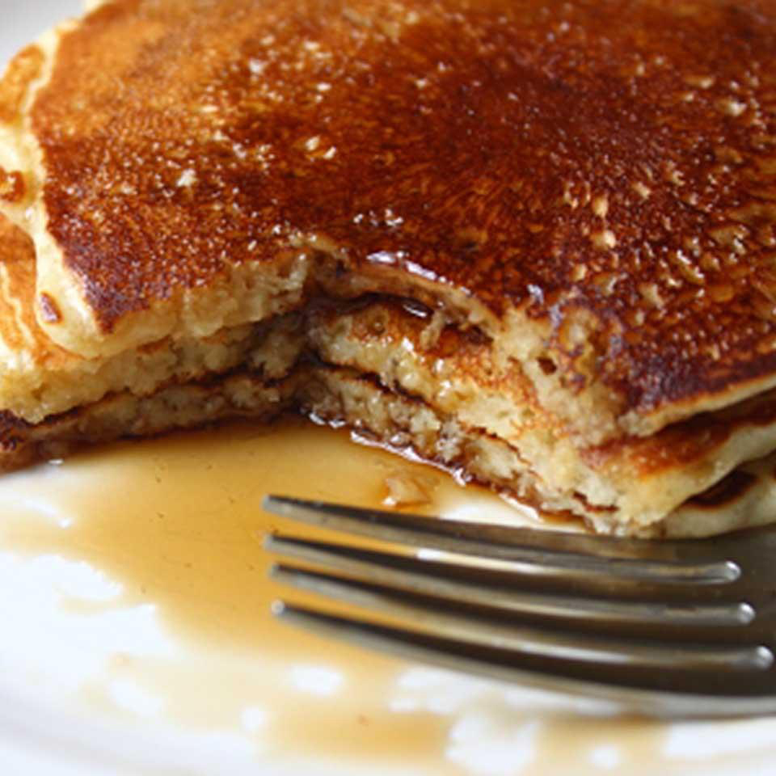

Old-Fashioned Pancakes

A stack of old-fashioned pancakes with maple syrup.
Old-fashioned pancakes make for an easy, flexible, and decadent meal to start your day!
You or your family will enjoy this simple recipe.
These pancakes only require some basic dairy and pantry staples to make.
They can be enjoyed plain, or with additional ingredients.
Add fruit and chocolate chips to spice up these old-fashioned pancakes, or enjoy them plain!
Ingredients
3 cups all-purpose flour
7 teaspoons baking powder
2 tablespoon white sugar
2 teaspoon salt
2 1/2 cups milk
6 tablespoons butter, melted
2 eggs
3 tablespoons butter
Steps
- Sift together flour, baking powder, sugar, and salt in a large bowl.
- Whisk milk, melted butter, and egg into the bowl until combined.
- Let batter rest for 5 minutes.
- Preheat a large skillet over medium-high heat. Melt butter to cover the pan.
- Pour batter into the hot skillet, about 1/4 cup batter for each pancake.
- Cook until bubbles appear on the sides and center of each pancake, 2 to 3 minutes.
- Flip and cook until the bottom is golden, 1 to 2 minutes.